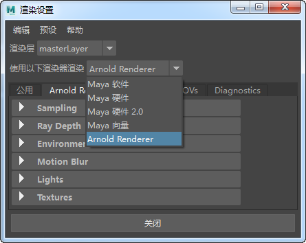
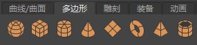
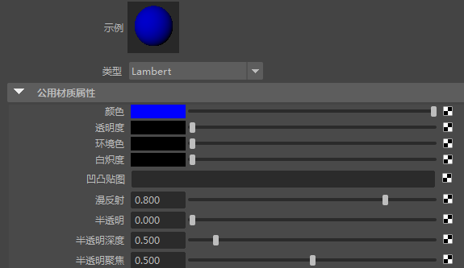
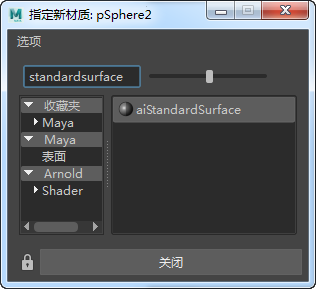
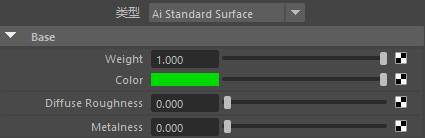
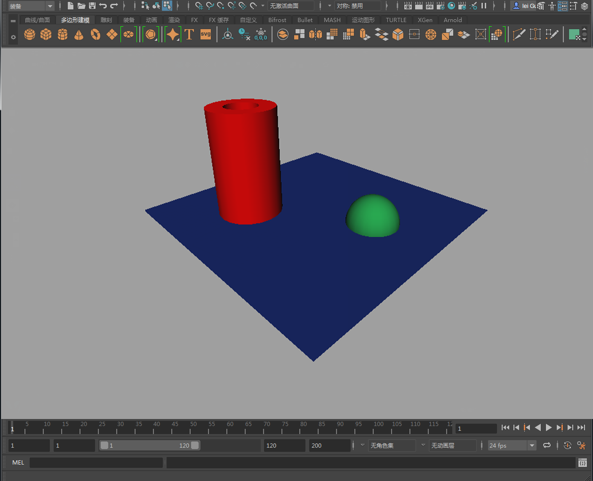
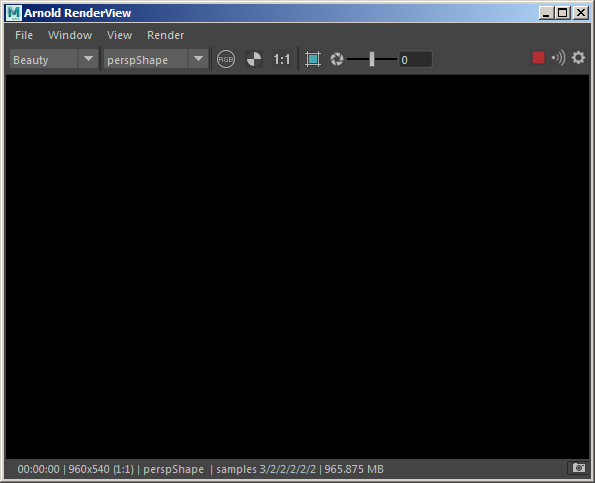
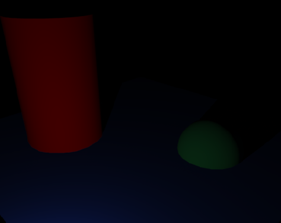
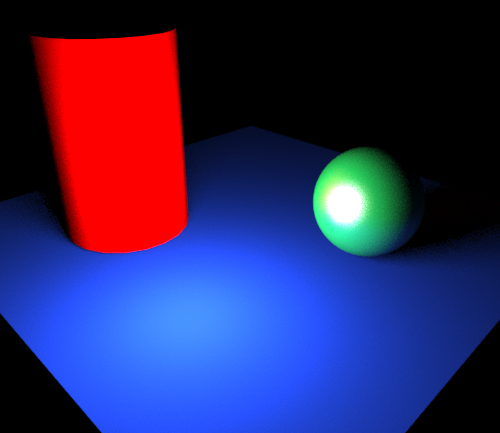

渲染您的第一个场景
本教程介绍了一个如何在 Maya 中使用 Arnold 渲染场景的简单示例。
假定您已完成以下操作：
启动 Maya。
第一步是告知 Maya 使用 Arnold 作为当前的渲染器。在“渲染设置”(Render Settings)对话框（从顶部菜单栏，单击“窗口 > 渲染编辑器 > 渲染设置”(Window > Rendering Editors > Render Settings)）中，通过“使用以下渲染器渲染”(Render Using)下拉菜单设置“Arnold 渲染器”(Arnold Renderer)。

请注意渲染器选项在组中的排列方式（这将在 Arnold 渲染设置主题的子主题中予以详细介绍）。
- 下一步，创建一个平面来作为地板。单击 Maya 工具架的“多边形”(Polygons)选项卡，然后从下面显示的图标中选择“多边形平面”(Polygon Plane)的图标（平面）。单击以放置平面的角，然后拖动以调整平面大小。

- 选中该地板平面，然后检查属性编辑器（如有必要，可按 Ctrl-A 以显示属性编辑器）。默认情况下会指定 Maya“Lambert”材质。选择 lambert1 选项卡，然后单击“颜色”(Color)属性（位于“公用材质属性”(Common Material Attributes)下方），选择比默认的灰色更有趣的颜色（在此示例中选择蓝色）。

接下来，创建一个球体，方法还是从 Maya 工具架的“多边形”(Polygons)选项卡中选择相应图标，并将其放置在地板平面上。默认情况下，球体将与地板平面在 Y 轴上相交（此效果在着色视图中比较明显，您可以在主视图中按“5”键切换到着色视图）。现在不会产生问题，请保持此位置不变。
对于此对象，我们指定新材质来替代默认设置。选中该球体，然后按住鼠标右键直至显示快捷菜单，然后从快捷菜单中选择“指定新材质”(Assign New Material)。
此时将显示以下菜单，您可以从中选择所需的材质。请注意，Arnold 内置着色器都带有前缀“Ai”。选择 standard_surface 着色器。

- 现在，如果在选择球体时查看属性编辑器，您将看到 standard_surface 着色器的属性。现在，只需为 base_color 选择绿色。

- 接下来，我们将创建另一个对象。这次选择一个圆柱体。与之前相同，将其放置在场景中，选中该对象并通过右键单击快捷菜单打开“指定新材质”(Assign New Material)菜单。
- 指定另一个新的 standard_surface 着色器。这次，将 base_color 设置为红色。得到的场景应该如下所示。

- 现在，我们已准备好打开“渲染视图”(Render View)窗口（“窗口 > 渲染编辑器 > 渲染视图”(Windows > Rendering Editors > Render View)或单击
 图标）。
图标）。 - 通过转到菜单“Arnold -> 渲染”(Arnold -> Render)启动交互式渲染。这将打开 Arnold 渲染视图(Arnold RenderView)窗口并开始渲染。

...此时渲染为黑色。别慌！我们只需添加一些灯光。
- 我们可以从 Maya 标准灯光集中进行选择。创建一个点光源（在 Maya 工具架上选择“渲染”(Rendering)选项卡，然后从下方显示的灯光选项中选择 point_light）。
- 默认情况下，点光源将位于场景的原点，而且如果 Arnold 渲染视图(Arnold RenderView)窗口处于打开状态，根据您放置其他对象的位置，您应该能立即看到一些颜色溢出。

您可能需要移动灯光以更好地查看阴影。

- 您可能会发现，对您来说场景仍然有点暗。在此需要指出的是，Arnold 中的灯光默认使用二次衰退（因为真实世界中就是如此，Arnold 旨在使用物理上精确的方法来建模和照明）。这与 Maya 中的默认行为不同，后者中的灯光默认设置为无衰退。事实上，在灯光属性编辑器的“点光源属性”(Point Light Attributes)部分下设置灯光衰退将没有任何效果，因为这是一个 Maya 控件。
您还可以通过改变灯光强度或更改“曝光”(Exposure)属性来解决“过暗”的问题。您应相应地选择强度（以及模型的比例），然后使用曝光设置进行精细调整。
- 如果增加灯光的半径（选择点光源，转到属性编辑器，展开“Arnold”选项卡，然后更改“半径”(Radius)），将可以获得软阴影。
- 我们来增加球体着色器上的高光大小。选择球体，打开属性编辑器，然后打开 standard_surface 着色器的镜面反射(Specular)组，将 specular_roughness 属性增大为 0.3 左右。

所有这些更改的结果可以立即在 Arnold 渲染视图(Arnold RenderView)窗口中显示，因此您可以交互方式更改材质和照明，无需重新渲染即可查看更改的效果（如果已执行正确的设置，则只需稍等一些时间就可以获得更优质的渲染效果）。
这个简短的介绍性教程到此结束。现在您已了解如何指定和编辑 Arnold 着色器，以及如何改变 Arnold 灯光设置，那么花几分钟时间试试各种设置再继续阅读可能会非常有帮助。